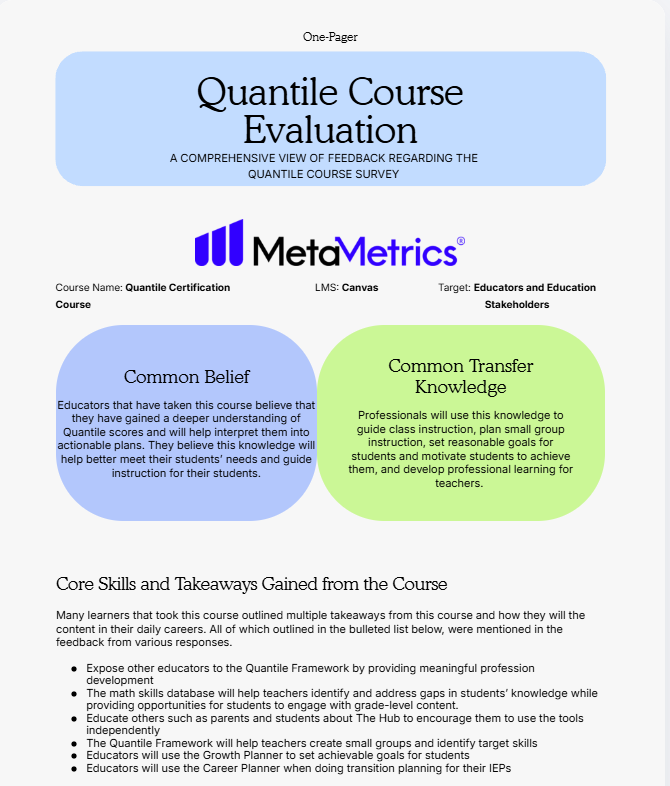

Exploring how educational resources can support student
learning and meet the needs of educators.
DATA ANALYSISSTAKEHOLDER FEEDBACKPRODUCT IMPROVEMENT
THE DELIVERABLE
Making learning data meaningful.
An external-facing report combining quantitative and
qualitative findings to communicate the value of the
Quantile Canvas course.
01 / QUANTILE REPORT

A stakeholder-informed report highlighting course
benefits, participant feedback, and key findings.
BEHIND THE PROJECT
From stakeholder feedback to product insight.
Using quantitative and qualitative data to communicate
educational value and identify opportunities for
continuous improvement.
01REPORT OVERVIEW
Report Overview
The image above shows a one-page report I created
for MetaMetrics after analyzing data collected from
education stakeholders who completed the Quantile
Canvas course. The report includes visual and
numerical metrics, course benefits, participant
quotes, and key takeaways from the learning
experience. In addition to the external-facing
report, I developed a separate internal document
outlining data-informed recommendations for
improving the course.
02MY CONTRIBUTION
Project Purpose
The purpose of this project was to analyze data
from the Quantile Canvas course to demonstrate its
value to education stakeholders and highlight the
importance of understanding the Quantile Framework
that serves as the foundation of MetaMetrics'
work. I developed an external-facing report that
combined quantitative and qualitative findings
to communicate the course's benefits to prospective
participants and other educators. I also created
an internal document with data-informed
recommendations to help MetaMetrics identify
opportunities for improvement and strengthen the
course for future learners. This experience allowed
me to apply data analysis, research, and
communication skills to support educational
product marketing and continuous product
improvement.